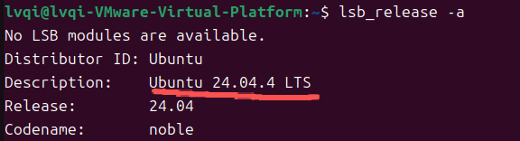
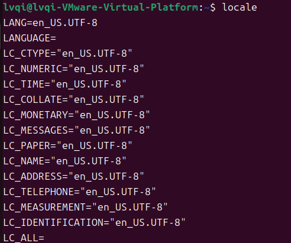
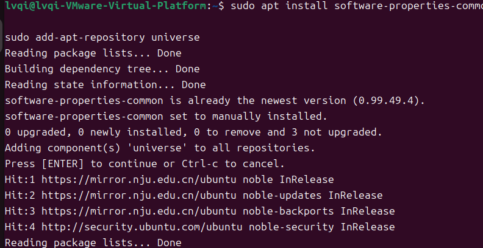
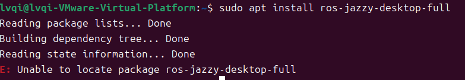
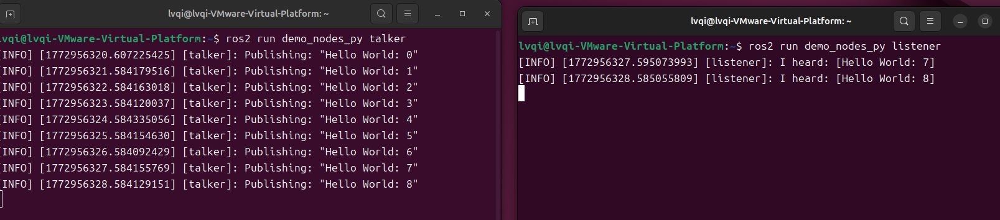
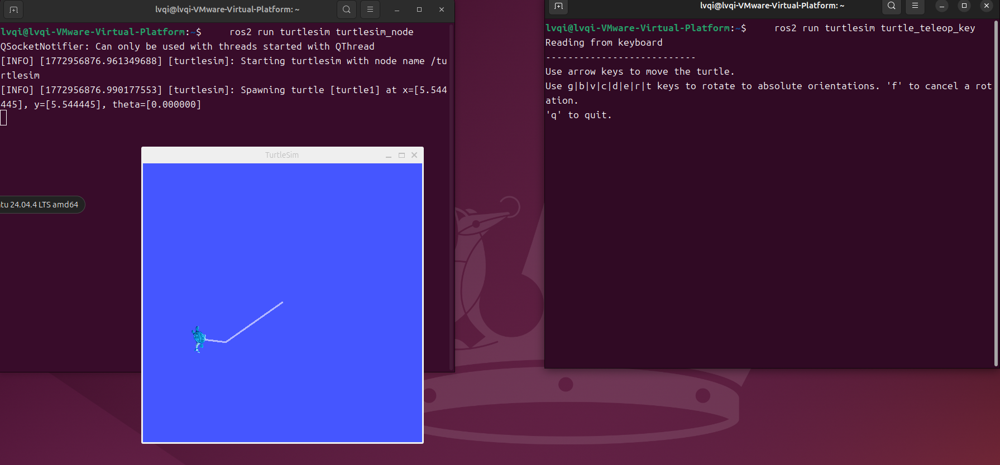

作者：吕麒 - HUNNU 2023AI
本教程详细介绍如何在 Ubuntu 24.04 上安装 ROS2 Jazzy Jalisco 版本。ROS2 是下一代机器人操作系统，为机器人开发提供了强大的工具和框架。
一、版本选择原则
Ubuntu 版本与 ROS2 版本严格绑定，本教程使用 Ubuntu 24.04 LTS，因此安装最新的 Jazzy Jalisco 版本的 ROS2。
| Ubuntu 版本 | ROS 2 版本 | 状态 |
|---|---|---|
| 20.04 LTS | Foxy Fitzroy | 已停止支持 |
| 22.04 LTS | Humble Hawksbill | 长期支持 |
| 24.04 LTS | Jazzy Jalisco | 最新 LTS |
二、官方标准安装教程
（1）核心版本分类
ROS2 提供三种安装版本，根据需求选择合适的版本：
| 版本名称 | 包名 | 包含内容 | 适用场景 | 磁盘占用 |
|---|---|---|---|---|
| ROS-Base | ros-jazzy-ros-base | 仅包含核心通信库、CLI 工具、构建工具。不包含 GUI 工具或编译器。 | 嵌入式设备、Docker 容器、无头服务器、只需运行节点的场景。 | ~300 MB |
| Desktop | ros-jazzy-desktop | Base + 可视化工具 + 编译工具。包含 RViz2, Gazebo, rqt, 以及 C++/Python 开发库。 | 标准开发环境。大多数开发者、研究人员的首选。 | ~2.5 GB |
| Desktop Full | ros-jazzy-desktop-full | Desktop + 仿真器 + 导航/感知库。包含完整的仿真环境、SLAM、Navigation2、Perception 库等。 | 需要完整仿真、自动驾驶算法开发、复杂机器人系统集成的场景。 | ~4.0 GB+ |
（2）前提准备
1. 检查操作系统版本
首先，确保你的系统版本是 Ubuntu 24.04。可以使用以下命令检查：
lsb_release -a
如果返回的版本不是 Ubuntu 24.04，建议先升级或安装合适的操作系统版本。
2. 设置 UTF-8 支持
确保系统支持 UTF-8 编码。ROS 2 需要 UTF-8 编码支持。运行以下命令检查并设置 UTF-8：
# 检查当前语言设置
locale
# 安装并配置 UTF-8
sudo apt update && sudo apt install locales
sudo locale-gen en_US en_US.UTF-8
sudo update-locale LC_ALL=en_US.UTF-8 LANG=en_US.UTF-8
export LANG=en_US.UTF-8
# 检查当前语言设置
locale
以上操作必须在同一个终端中执行，并且接下来的操作也必须在这个终端中执行。
3. 启用 Universe 存储库
Ubuntu 24.04 通常会默认启用 Universe 存储库，但你可以通过以下命令确认并启用它：
sudo apt install software-properties-common
sudo add-apt-repository universe
（3）安装 ROS2 Jazzy
1. 安装所需依赖
- curl：用于下载文件，设置 ROS 2 仓库。（之前的配置已经安装过）
- gnupg：用于处理 GPG 密钥，验证下载的包的来源。
- lsb-release：提供有关操作系统版本的信息，ROS 2 使用它来确认系统的版本和发行信息。
sudo apt install curl gnupg lsb-release -y2. 设置 ROS 2 软件源
下载 ROS2 GPG 密钥
# 下载 ROS 2 GPG 密钥
sudo curl -sSL https://raw.githubusercontent.com/ros/rosdistro/master/ros.key -o /usr/share/keyrings/ros-archive-keyring.gpg执行失败（有输出）的情况：
- 网络不通：curl: (7) Failed to connect to raw.githubusercontent.com port 443: Connection refused
- 权限不足：/usr/share/keyrings/ros-archive-keyring.gpg: Permission denied
- 链接失效：curl: (22) The requested URL returned error: 404
添加 ROS2 软件源
# 添加 ROS 2 软件源
echo "deb [arch=$(dpkg --print-architecture) signed-by=/usr/share/keyrings/ros-archive-keyring.gpg] http://packages.ros.org/ros2/ubuntu $(. /etc/os-release && echo $UBUNTU_CODENAME) main" | sudo tee /etc/apt/sources.list.d/ros2.list > /dev/null3. 安装 ROS2
sudo apt update # 更新包管理器的本地软件包索引
sudo apt upgrade -y
sudo apt install ros-jazzy-desktop-full -y常见问题与解决方案
E: Unable to locate package ros-jazzy-desktop

根本原因：
- 未正确添加 ROS 官方软件源或 GPG 密钥。
- 添加软件源后未执行
sudo apt update来刷新本地软件包索引。- 网络问题导致无法访问 ROS 官方源。
解决方案：
- 重新执行 设置 ROS 2 软件源
- 先执行
sudo apt update，再执行安装- 多执行几次，或检查网络连接。
4. 配置环境变量
为了让 ROS2 在每个终端中可以使用，需要配置环境变量：
# 添加到 .bashrc
echo "source /opt/ros/jazzy/setup.bash" >> ~/.bashrc
# 立即生效
source ~/.bashrc（4）验证安装是否成功
1. 检查 ROS 2 版本
echo $ROS_DISTRO
# 应输出: jazzy2. 运行 talker-listener 示例
这个案例需要在两个终端中运行，一个终端运行 talker，一个终端运行 listener：
# 终端 1: 运行 talker
ros2 run demo_nodes_py talker
# 终端 2: 运行 listener
ros2 run demo_nodes_py listener在打开第二个终端运行时如果提示 ros2 找不到，就再运行一下 source ~/.bashrc

3. 运行小海龟仿真
# 终端 1: 启动仿真
ros2 run turtlesim turtlesim_node
# 终端 2: 启动键盘控制
ros2 run turtlesim turtle_teleop_key
如果以上步骤都能正常运行，说明安装成功！🎉
（5）安装其他开发工具
1. 更新系统并安装开发工具
sudo apt update && sudo apt install ros-dev-tools -y2. 安装自动补全功能
sudo apt install python3-argcomplete3. 安装 colcon 和 pip
sudo apt install python3-pip -y
sudo apt install python3-colcon-common-extensions恭喜完成！
你已经成功安装了 ROS2 Jazzy Jalisco 版本。现在可以开始你的机器人开发之旅了！
推荐学习路径：
- 学习 ROS2 核心概念（Node、Topic、Service、Action）
- 尝试编写简单的 C++/Python 节点
- 使用 RViz2 进行可视化
- 学习使用 Gazebo 进行仿真